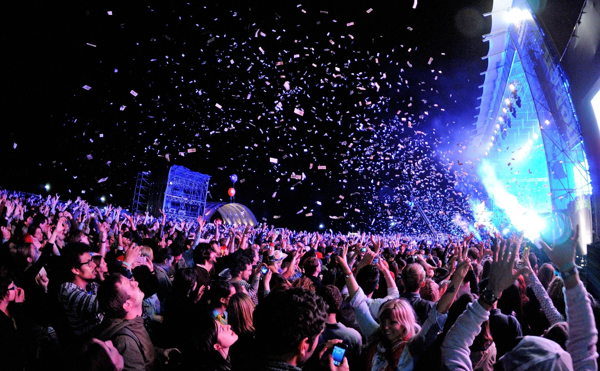
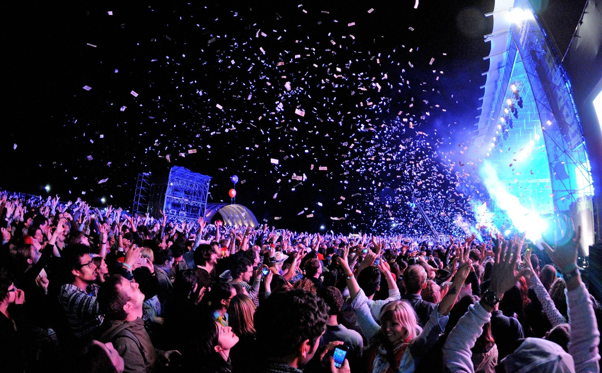

Introducción a los Festivales de Múisca
Los festivales de múisca son eventos que reúnen a miles de amantes de la múisca para disfrutar de actuanciones en vivo, descubir nuevos artistas y vivir experiencias únicas.
Los festivales de múisca son eventos que reúnen a miles de amantes de la múisca para disfrutar de actuanciones en vivo, descubir nuevos artistas y vivir experiencias únicas.
| Festival | Ubicación | Género Principal | Duración |
|---|---|---|---|
| Coachella | California, EE.UU. | Variado | 3 días |
| Tomorrowland | Boom, Belgica | Electrónica | 3 días |
| Glastonbury | Somerest, Reino Unido | Rock/Alterativo | 5 días |
El festival de Woodstock de 1969 atrajo a más de 400,000 perosnas, a pesar de que solo se esperaban 50,000.
Dsifurta de este video que captura la esecia de los festivales de música: